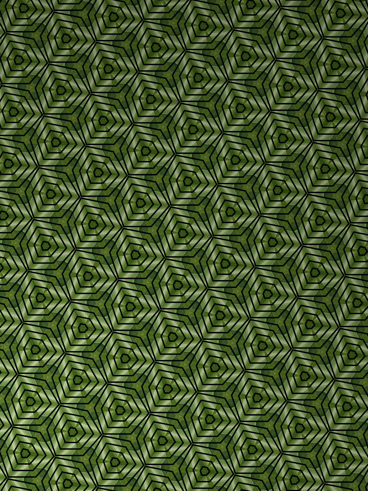

|  |
Dive into our Vertical Garden section where creativity meets sustainability. This is a celebration of the innovative approach of integrating plants into urban environments in a vertical format, a testament to human resourcefulness in the face of limited space.
Here, you'll discover a vast array of ideas on how to transform would-be waste materials into sustainable, beautiful, and thriving gardens. From DIY guides on upcycling aluminum cans into modular planters, to detailed articles and SolarPunk fiction exploring the transformative power of these gardens in various settings like Austin's schools and cityscape, the Vertical Garden category provides a deep dive into a green future.
Through the articles and stories in this section, we share and explore concepts, techniques, and innovations that align with a sustainable, circular economy, which views waste as an asset rather than a problem. Whether you are looking to start your own vertical garden project or just enjoy immersing yourself in hopeful visions of a green urban future, you're in the right place.
Join us as we explore and reimagine our relationship with nature and urban space, one vertical garden at a time.
@releaf.bryce How to make a modular planter from cans
♬ original sound - ReLeaf 🍃 Bryce